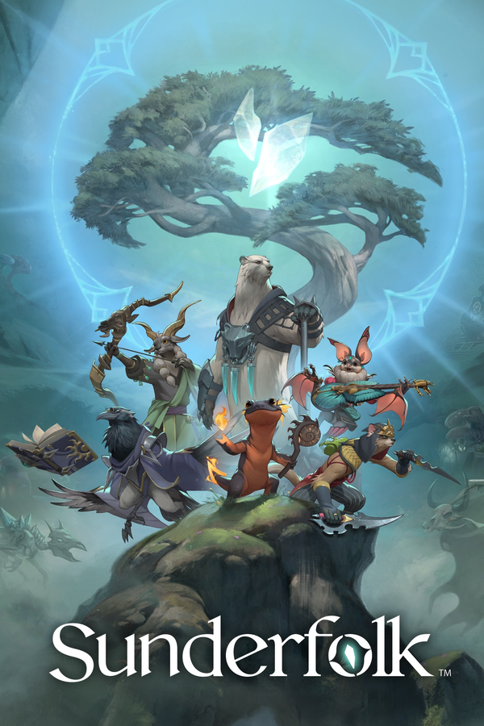

Sunderfolk
Every archived year-end list appearance, including placement and points earned.
About the Game
Rediscover Game Night with the magic of Sunderfolk, a shared turn-based tactical RPG adventure where your mobile device becomes the controller*. Built with a couch co-op experience in mind, up to four players adventure through the magical and dangerous Sunderlands.*The free mobile app is required to play the game.Couch Co-Op FirstThe best adventures are meant to be shared. Up to four players can play together in this new tactical RPG adventure where your mobile device becomes the controller.Step into a New World Scan a QR code on the display, download the free Sunderfolk phone app* (on both iOS and Android), and transform your phone or tablet into a controller, hand of cards, rule book, inventory, and more. All friends and family can learn to play quickly, since all they need will be in-hand. Six Unique Heroes Traditional RPG classes have been reimagined in Sunderfolk. Take up the mantle of an Arcanist, Bard, Berserker, Pyromancer, Ranger or Rogue – each with their own playstyle. Tailor your character’s strengths with Skill Cards. Power up with Trinkets and Weapons to craft your character’s build quest-to-quest. Tactical Combat Inspired by the TabletopEach player takes their turn one at a time by choosing one of their Skill Cards to determine their character's actions. Enemies lurk around every corner, each with their own abilities and strategies, and they will challenge your party to change its approach from one encounter to the next. Rebuild the Village of Arden The village of Arden grew around the remnant of a magical substance known as brightstone, but unknown forces from lands outside have started to threaten this community's very existence. Between quests, return to Arden village to upgrade vendors, acquire new items and equipment, and befriend townsfolk for additional rewards. Four Players, One GameShare the experience of Sunderfolk with friends at no extra cost. Our rather unique mobile device as a controller mechanic lets one gamer share the adventure with three friends at no additional cost. A host can even launch the game and have three players join remotely for free via Steam Remote Play Together.
| Developer | Secret Door |
|---|---|
| Publisher | Dreamhaven |
| Genres | RPG, Strategy |
| Platforms | PC |
Steam AchievementsMultiplayerFull controller supportSteam CloudRPGCo-opcooperativeSplit ScreenLocal Co-OpLocal MultiplayerColorfulcombat
Where to Buy
Game information provided by RAWG.
Points by Year
List History
| Year | Source | List | Placement | Points |
|---|---|---|---|---|
| 2025 | GameSpot | The Best Games Of 2025 | Unranked | 1 |
| 2025 | NPR | The best games of 2025, picked by NPR's staff | Unranked | 1 |